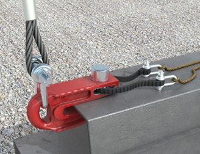

|
Maschinenumsturz
Setzen Sie Ihre Ramm- und Bohrgeräte nur auf einem Arbeitsplanum und auf Fahrwegen ein, die für die eingesetzten Maschinen und deren Bodenpressung ausreichend tragfähig sind.
Stimmen Sie mit Ihrem Auftraggeber oder Ihrer Auftraggeberin frühzeitig Maßnahmen zur ausreichenden Befestigung oder Ertüchtigung des Arbeitsplanums und der Fahrwege ab.
- Halten Sie die Herstellervorgaben für das Verfahren und Arbeiten auf geneigtem Gelände ein.
- Sorgen Sie dafür, dass Schrägzug mit Hilfswinden von Großbohr- bzw. Rammgeräten vermieden bzw. nur im Rahmen der Herstellervorgaben bestimmungsgemäß durchgeführt wird.
Herabfallen von Lasten
Eine sichere Handhabung von Lasten ist mit formschlüssigen Anschlagmitteln/Lastaufnahmemitteln und den dazugehörigen Anschlagpunkten gewährleistet. Diese müssen für die vorgesehene Anwendung geeignet und bemessen sein. Hierzu gehören zum Beispiel:
- Im Herstellungsprozess eingebaute Anschlagpunkte an Bewehrungskörben.
- Formschlüssige Lastaufnahmemittel für Spundbohlen, Rohre und Träger.
- Hinweise der Betriebsanleitung der Hersteller von Rammgeräten beachten.
- Eigenkonstruktionen von Anschlagmitteln oder Lastaufnahmemitteln müssen den gesetzlichen Anforderungen (z. B. Betriebssicherheitsverordnung, Produktsicherheitsgesetz) entsprechen, andernfalls dürfen sie nicht eingesetzt werden.
Das Aufrichten von Bohrrohren kann z. B. mit drehbaren Bohrrohrgreifern an Grundgeräten wie Bagger oder Radlader erfolgen.
Ist die formschlüssige Lastaufnahme nicht möglich, dürfen sich bei kraftschlüssiger Lastaufnahme keine Personen im Gefahrenbereich aufhalten.

Abb. 127 Formschlüssiger Sicherheitsschäkel mit Fernauslösung
Unbeabsichtigtes Lösen/Versagen von Anbaugeräten oder Maschinenteilen
Minimierung der Gefährdungen erreichen Sie z. B. durch folgende Maßnahmen:
- Arbeitstägliche Sichtprüfung von Maschinen und Geräten auf augenscheinliche Mängel.
- Arbeitstägliche Funktionskontrolle der sicherheitsrelevanten Bauteile auf einwandfreie Funktion.
- Erforderlichenfalls Prüfungen durch eine zur Prüfung befähigte Person, z. B. nach der Montage eines Seilbaggers.
- Minimierung des betriebsbedingten Aufenthaltes im Gefahrenbereich.
- (Mobil-)Krane nur dann als Trägergerät bei Zieharbeiten einsetzen, wenn dies vom Hersteller als bestimmungsgemäßer Einsatz vorgesehen ist.
Herabfallende Gegenstände
Die Gefährdung von Beschäftigten durch herunterfallende Anhaftungen an Bohrwerkzeugen kann zum Beispiel durch den Einsatz von Schneckenräumern an Bohrschnecken vermieden werden.
Umfallen und Wegrollen von Bohrrohren, Bohreimern oder Bohrschnecken bei der Zwischenlagerung
Das Wegrollen kann z. B. durch folgende Maßnahmen vermieden werden:
- Sicherung gegen Wegrollen durch Verkeilen
- Keine Lagerung auf geneigten Flächen
- Keine Lagerung in Hangrichtung
 Das Umfallen kann z. B. durch das Eindrehen der Bohrwerkzeuge in den Baugrund erreicht werden. Das Umfallen kann z. B. durch das Eindrehen der Bohrwerkzeuge in den Baugrund erreicht werden.
Absturz von hochgelegenen Arbeitsplätzen, z. B. am Mäkler oder Oberwagen
Für Arbeiten auf hochgelegenen Arbeitsplätzen, z. B.
- beim Einfädeln der Bewehrung,
- bei Wartungs- oder Reparaturarbeiten,
- bei Montagearbeiten
kann die Absturzgefahr unter anderem durch Arbeitsplattformen mit Absturzsicherung (Umwehrung), Hubarbeitsbühnen oder persönliche Schutzausrüstungen gegen Absturz (z. B. Auffanggurt mit Höhensicherungsgerät) minimiert werden (das TOP-Prinzip ist anzuwenden). Anschlageinrichtungen müssen in ausreichender Anzahl vorhanden, geeignet und hierfür bemessen sein.
Scher- und Quetschstellen
- Untersagen der Lagerung von Arbeits- und Betriebsmitteln auf Flächen des Unterwagens.
- Einhalten von Mindestabständen zwischen Gerät und festen Teilen in der Umgebung,
- Absperren von Bereichen mit Quetsch- und Schergefahren.

Abb. 128 Mindestabstände
|